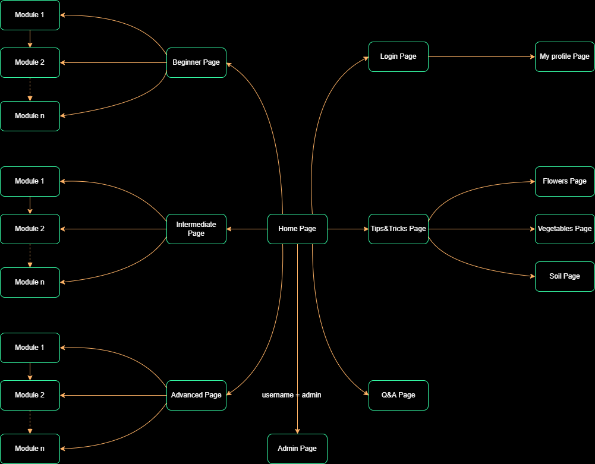
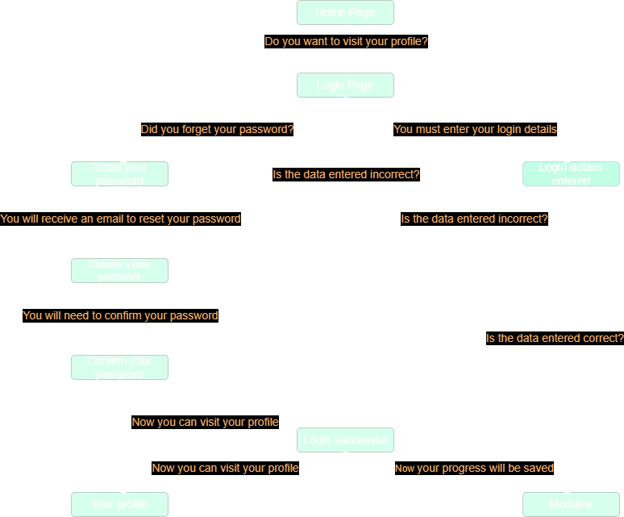

e-Gardening
Authors
- Madalina Carausu
- Isabela Haiura
1. Introduction
1.1 Purpose
The purpose of this document is to offer a detailed documentation about the e-Gardening Web Application. It will go through all the functionalities of the Web Site and it will provide information and explanation about each web page.
1.2 Document Conventions
This Document was created based on the IEEE template for System Requirement Specification Documents.
1.3 Intended Audience and Reading Suggestions
Normal users who wish to use the application for learning how to garden.
1.4 Product Scope
e-Gardening has been developed for the purpose of teaching the users how to garden properly.
1.5 References
2. Overall Description
2.1 Product Description
The e-Gardening application was developed in order to help people more or less passionate about gardening improve their knowledge and abilities using the courses on the site.
2.2 Product Functions
The web application offers three level courses each of them having a few modules. The levels are: Beginner, Intermediate and Advanced. These modules include general information about gardening, relevant images, tasks and pieces of advice. In this application the user can log in and have access a private profile where he can add what plants he would like to grow and the application will send him notifications regarding each plant’s needs. Any user can also addres questions about anything related to gardening and he will receive an answer as soon as possible. All the questions and answers are placed on a special page.
Home page: central point of navigation to the rest of the pages within the website
- login button: redirects to a login pop-up;
- beginner: redirects the user to the Beginner course;
- intermediate: redirects the user to the Intermediate course;
- advanced: redirects the user to the Advanced course;
- flowers: redirects the user to the Tips and Tricks about flowers;
- vegetables: redirects the user to the Tips and Tricks about vegetables;
- soil: redirects the user to the Tips and Tricks about soil;
- q&a: redirects the user to the Frequent Questions and Answers page;
- contact us button: redirects the user to the Contact page.
- remember me: stores the credentials so that the user won’t have to re-enter them the next time he visits;
- login: finalizes the login action, logging the user if the credentials are correct and then the user can have access to his profile and his progress will be saved;
- create account: redirects to a sign up page;
- create account: creates the user account if the information entered is valid and then redirects to the home page.
- change password: changes the user’s password if the information entered is valid and then redirects to the home page.
- Module x: redirects to Module x page.
- Module x: redirects to Module x page.
- Module x: redirects to Module x page.
- check task: adds a new task to the "done" state;
- form: redirects the user to a form where he can address his question;
- read more: redirects the user to a module relevant for his question.
2.2.1 How to use the product
- Home page data flow. 
- Other pages data flow (in this example the Q&A page).
- Login data flow. 
- Logout data flow.
2.3 User Classes and Characteristics
- Guest: simple viewer of the website;
- User: user with an associated account that can have a profile and can see his progress.
- Admin: the administrator of the website who can modify the courses, plants and can answer questions.
2.4 Operating Environment
The developed product can be used on any device with a connection to the Internet and a browser installed.
2.5 Design and Implementation Constraints
e-Gardening uses html, css and javascript for its visualization engine and when it comes to backend part, it is written in Node.js. The information about users, courses and plants are being kept into the MongoDB database. It also uses libraries such as "nexmo" to send SMS to its users, RSS for the rss feed. As per the code formatting, we used MVC.
2.6 Security
e-Gardening uses bcrypt library to encript its users passwords and generates new sessions for each new client. Moreover, it doesn't fetch unnecessary information and it doesn't fetch users passwords or confidential data.
3. External Interface Requirements
3.1 User Interfaces
3.2 Software Interfaces
The minimum software requirements of e-Gardening are a working browser and connection to the Internet.
3.3 Communications Interfaces
e-Gardening requires Internet connection. The communication standard that is to be used is HTTP.
4. System Features
4.1 Home page
Guests and users can read about our courses, tips and tricks, questions and answers and they cad adress questions as soon as they log in.
4.2 Login pop-up
Users of the app can login by entering their credentials and therefore access other functionalities of the app.
4.3 SignUp page
Guests can create an account and then use it to log in into the application and access all the features provided by the website.
4.4 Beginner page
Guests can view the modules available and the users can also see their progress.
4.5 Intermediate page
Guests can view the modules available and the users can also see their progress.
4.6 Advanced page
Guests can view the modules available and the users can also see their progress.
4.7 Garden Basics page
Guests and users can view the information about an organic garden.
4.8 Growing Zone page
Guests and users can view the information about where to place your garden.
4.9 Garden Beds page
Guests and users can view the information about how to make different garden beds.
4.10 Flowers page
Guests and users can view some tips and tricks regarding the flowers.
4.11 Vegetables page
Guests and users can view some tips and tricks regarding the vegetables.
4.11 Soil page
Guests and users can view some tips and tricks regarding the soil.
4.12 Q&A page
Guests and users can view the frequent asked questions and answers and can also address their own questions.
4.13 My profile page
Users can view their progress, their plants status and can add new available plants to their virtual garden.
4.14 Admin page
The website administrator can post a new course, plant or can answer some questions from the website, addressed by the users.
5. Other Nonfunctional Requirements
5.1 Safety Requirements
To ensure that no one of e-Gardening’s users loses any data while using the application.
5.2 Security Requirements
e-Gardening doesn’t have any security requirements and thus any type of user can use it without any additional privileges.
5.3 Software Quality Attributes
- Adaptability
- Availability
- Maintanability
- Portability
- Reusability
Contribution
Carausu Madalina:
- Website design implementation
- Home page
- Q&A page
- Semantics and metadata
- Documentation
- Admin page
- Dynamic courses, plants and answers
- Dynamic questions
- Flux de date RSS
- REST API
Haiura Isabela:
- Website design implementation
- Beginner page
- Garden Basics page
- Growing Zone page
- Garden Beds page
- Login pop-up
- Documentation
- Login/Sign-up
- ajax
- Data export: csv
- MVC
- My profile with dynamic data